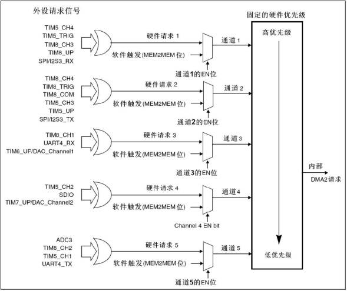
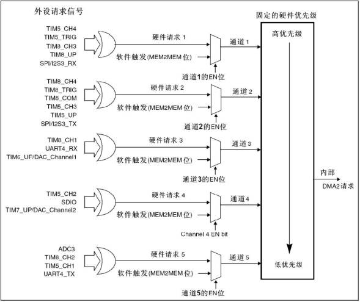

STM32相关软件下载与安装
下载并安装STM32CubeIDE
其他
独立按键
image-20230426085540729
串联的电容用于消除按键抖动。从这个电路中可以看出，当按键按下，电路导通，PB12直连GND，读取到的是低电平。
当按键松开，连接的是3.3v的正极，而采用浮空输入，内部有高速电阻，所以R11分的电压几乎可忽略不计，相当于直连正极，读到的是高电平。
如果采用上拉输入，相当于内部接了上拉电阻，此处的上拉电阻可以省略。
HAL_GPIO_ReadPin()
GPIO_PinState是高电平和低电平状态的枚举类型
HAL_GPIO_TogglePin（）翻转输出电平
Ctrl+鼠标点击，可查看函数实现 浮空输入，内部有高电阻
GPIO
8种GPIO模式
使用GPIO的基本步骤
使用UART的基本步骤
串行通信方式，RS232电平。异步通信通过帧发送，帧由起始位，数据位，奇偶校验位，停止位构成，通过波特率和起始位保证通信双方接发同步。有Rx,Tx两条数据线。
配置UART的GPIO引脚
使能GPIO和UART的时钟
配置GPIO引脚为复用功能等
配置GPIO引脚的复用映射到UART的收发引脚
配置UART的波特率、数据位、等等信息
配置UART的发送和接收方式
配置UART的发送和接收中断（可选，配置中断向量表，开中断）
或者轮询方式进行发送和接收（主循环中轮询）
使能UART
UART代码
1 2 3 4 5 6 7 8 9 10 11 12 13 14 15 16 17 18 19 20 21 22 23 24 25 26 27 28 29 30 31 32 33 34 35 36 37 38 39 40 41 42 43 44 45 46 47 48 49 50 51 52 53 54 55 56 57 58 59 60 61 62 63 64 65 66 67 68 69 70 71 72 73 74 75 76 77 78 79 80 81 82 83 84 85 86 87 88 89 90 91 92 93 94 95 96 97 98 99 100 101 102 103 104 105 106 107 108 109 110 111 112 113 114 115 116 117 118 119 120 121 122 123 124 125 126 127 128 129 130 131 //UART HAL库代码 #include "stm32f1xx_hal.h" #include "stdio.h" //重定向printf函数 #if 1 #pragma import(__use_no_semihosting) //标准库需要的支持函数 struct __FILE { int handle; }; FILE __stdout; //定义_sys_exit()以避免使用半主机模式 void _sys_exit(int x) { x = x; } //重定义fputc函数 int fputc(int ch, FILE *f) { while((USART1->SR&0X40)==0);//循环发送,直到发送完毕 USART1->DR = (unsigned char) ch; return ch; } #endif uint8_t TxBuf[]="Hello World";//HAL库使用的串口接收缓冲 UART_HandleTypeDef UART1_Handler; //UART句柄 void MX_USART1_UART_Init(void); void HAL_UART_MspInit(UART_HandleTypeDef *huart); void SystemClock_Config(void); int main(void) { HAL_Init(); //初始化HAL库 SystemClock_Config(); //设置时钟,72M MX_USART1_UART_Init(); //初始化串口 while (1) { HAL_Delay(100); HAL_UART_Transmit(&UART1_Handler, TxBuf, sizeof(TxBuf), 100); } } /*************************** 时钟部分代码 ****************************/ //系统时钟时钟 void SystemClock_Config(void) { RCC_OscInitTypeDef RCC_OscInitStructure; RCC_ClkInitTypeDef RCC_ClkInitStructure; RCC_OscInitStructure.OscillatorType=RCC_OSCILLATORTYPE_HSE; //时钟源为HSE RCC_OscInitStructure.HSEState=RCC_HSE_ON; //打开HSE RCC_OscInitStructure.HSEPredivValue=RCC_HSE_PREDIV_DIV1; //HSE预分频 RCC_OscInitStructure.PLL.PLLState=RCC_PLL_ON; //打开PLL RCC_OscInitStructure.PLL.PLLSource=RCC_PLLSOURCE_HSE; //PLL时钟源选择HSE RCC_OscInitStructure.PLL.PLLMUL=RCC_PLL_MUL9; //主PLL倍频因子 if(HAL_RCC_OscConfig(&RCC_OscInitStructure)!=HAL_OK) { while(1); } //选中PLL作为系统时钟源并且配置HCLK,PCLK1和PCLK2 RCC_ClkInitStructure.ClockType=(RCC_CLOCKTYPE_SYSCLK|RCC_CLOCKTYPE_HCLK|RCC_CLOCKTYPE_PCLK1|RCC_CLOCKTYPE_PCLK2); RCC_ClkInitStructure.SYSCLKSource=RCC_SYSCLKSOURCE_PLLCLK; //设置系统时钟时钟源为PLL RCC_ClkInitStructure.AHBCLKDivider=RCC_SYSCLK_DIV1; //AHB分频系数为1 RCC_ClkInitStructure.APB1CLKDivider=RCC_HCLK_DIV2; //APB1分频系数为2 RCC_ClkInitStructure.APB2CLKDivider=RCC_HCLK_DIV1; //APB2分频系数为1 if (HAL_RCC_ClockConfig(&RCC_ClkInitStructure,FLASH_LATENCY_2) != HAL_OK) { while(1); } } /*************************** 串口部分代码 ****************************/ //初始化IO 串口1 void MX_USART1_UART_Init() { //UART 初始化设置 UART1_Handler.Instance=USART1; //USART1 UART1_Handler.Init.BaudRate=115200; //波特率 UART1_Handler.Init.WordLength=UART_WORDLENGTH_8B; //字长为8位数据格式 UART1_Handler.Init.StopBits=UART_STOPBITS_1; //一个停止位 UART1_Handler.Init.Parity=UART_PARITY_NONE; //无奇偶校验位 UART1_Handler.Init.HwFlowCtl=UART_HWCONTROL_NONE; //无硬件流控 UART1_Handler.Init.Mode=UART_MODE_TX_RX; //收发模式 HAL_UART_Init(&UART1_Handler); //HAL_UART_Init()会使能UART1 } //UART底层初始化，时钟使能，引脚配置，中断配置 //此函数会被HAL_UART_Init()调用 void HAL_UART_MspInit(UART_HandleTypeDef *huart)//huart:串口句柄 { //GPIO端口设置 GPIO_InitTypeDef GPIO_Initure; if(huart->Instance==USART1)//如果是串口1，进行串口1 MSP初始化 { __HAL_RCC_GPIOA_CLK_ENABLE(); //使能GPIOA时钟 __HAL_RCC_USART1_CLK_ENABLE(); //使能USART1时钟 __HAL_RCC_AFIO_CLK_ENABLE(); GPIO_Initure.Pin=GPIO_PIN_9; //PA9 GPIO_Initure.Mode=GPIO_MODE_AF_PP; //复用推挽输出 GPIO_Initure.Pull=GPIO_PULLUP; //上拉 GPIO_Initure.Speed=GPIO_SPEED_FREQ_HIGH;//高速 HAL_GPIO_Init(GPIOA,&GPIO_Initure); //初始化PA9 GPIO_Initure.Pin=GPIO_PIN_10; //PA10 GPIO_Initure.Mode=GPIO_MODE_AF_INPUT; //模式要设置为复用输入模式！ HAL_GPIO_Init(GPIOA,&GPIO_Initure); //初始化PA10 } }
1 2 3 4 5 6 7 8 9 10 11 12 13 14 15 16 17 18 19 20 21 22 23 24 25 26 27 28 29 30 31 32 33 34 35 36 37 38 39 40 41 42 43 44 45 46 47 48 49 50 51 52 53 54 55 56 57 58 59 60 61 62 63 64 65 66 67 68 69 70 71 72 73 74 75 76 77 78 79 80 81 82 83 84 85 86 87 88 89 90 91 92 93 94 95 96 97 98 99 100 101 102 103 104 105 106 107 108 109 110 111 112 113 114 115 116 117 118 119 120 121 122 123 124 125 126 127 128 // UART 标准库代码 //将串口接收的数据原样返回 #include "stm32f10x.h" #include "stm32f10x_usart.h" #include "stdio.h" //重定向printf函数 #if 1 #pragma import(__use_no_semihosting) //标准库需要的支持函数 struct __FILE { int handle; }; FILE __stdout; //定义_sys_exit()以避免使用半主机模式 void _sys_exit(int x) { x = x; } //重定义fputc函数 int fputc(int ch, FILE *f) { while((USART1->SR&0X40)==0);//循环发送,直到发送完毕 USART1->DR = (unsigned char) ch; return ch; } #endif void GPIO_Configuration(void); void USART_Configuration(u32 bound); void RCC_Configuration(void); int main(void) { RCC_Configuration(); GPIO_Configuration(); USART_Configuration(9600); while(1) { if(USART_GetFlagStatus(USART1,USART_FLAG_RXNE)==SET) { USART_SendData(USART1,USART_ReceiveData(USART1)); } } } /*************************** 时钟部分代码 ****************************/ void RCC_Configuration(void) { ErrorStatus HSEStartUpStatus;//定义枚举型变量HSEStartUpStatus RCC_DeInit();//复位系统时钟设置 RCC_HSEConfig(RCC_HSE_ON);//开启HSE HSEStartUpStatus=RCC_WaitForHSEStatusUp();//等待HSE起振并稳定 if(HSEStartUpStatus==SUCCESS)//判断HSE是否起振成功，是则进入if内部 { RCC_HCLKConfig(RCC_SYSCLK_Div1);//选择HCLK(AHB)时钟源为SYSCLK 1 分频 RCC_PCLK2Config(RCC_HCLK_Div1);//选择PCLK2时钟源为HCLK(AHB) 1 分频 RCC_PCLK1Config(RCC_HCLK_Div2);//选择PCLK1时钟源为HCLK(AHB) 2 分频 FLASH_SetLatency(FLASH_Latency_2);//设置FLASH延时周期数为2 FLASH_PrefetchBufferCmd(FLASH_PrefetchBuffer_Enable);//使能FLASH预取缓存 RCC_PLLConfig(RCC_PLLSource_HSE_Div1,RCC_PLLMul_9);//选择锁相环(PLL)时钟源为HSE 1 分频，倍频数为9，则PLL输出频率为 8MHz*9=72MHz RCC_PLLCmd(ENABLE);//使能PLL while(RCC_GetFlagStatus(RCC_FLAG_PLLRDY)==RESET);//等待PLL输出稳定 RCC_SYSCLKConfig(RCC_SYSCLKSource_PLLCLK);//选择SYSCLK时钟源为PLL while(RCC_GetSYSCLKSource()!=0x08);//等待PLL成为SYSCLK时钟源 } RCC_APB2PeriphClockCmd(RCC_APB2Periph_USART1|RCC_APB2Periph_GPIOA, ENABLE); //使能USART1，GPIOA时钟 } /*************************** 串口部分代码 ****************************/ //初始化IO 串口1 void GPIO_Configuration(void) { //GPIO端口设置 GPIO_InitTypeDef GPIO_InitStructure; //USART1_TX GPIOA.9 GPIO_InitStructure.GPIO_Pin = GPIO_Pin_9; //PA.9 GPIO_InitStructure.GPIO_Speed = GPIO_Speed_50MHz; GPIO_InitStructure.GPIO_Mode = GPIO_Mode_AF_PP; //复用推挽输出 GPIO_Init(GPIOA, &GPIO_InitStructure);//初始化GPIOA.9 //USART1_RX GPIOA.10初始化 GPIO_InitStructure.GPIO_Pin = GPIO_Pin_10;//PA10 GPIO_InitStructure.GPIO_Mode = GPIO_Mode_IN_FLOATING;//浮空输入 GPIO_Init(GPIOA, &GPIO_InitStructure);//初始化GPIOA.10 } //UART底层初始化，时钟使能，引脚配置，中断配置 void USART_Configuration(u32 bound){ USART_InitTypeDef USART_InitStructure; //USART 初始化设置 USART_InitStructure.USART_BaudRate = bound;//串口波特率 USART_InitStructure.USART_WordLength = USART_WordLength_8b;//字长为8位数据格式 USART_InitStructure.USART_StopBits = USART_StopBits_1;//一个停止位 USART_InitStructure.USART_Parity = USART_Parity_No;//无奇偶校验位 USART_InitStructure.USART_HardwareFlowControl = USART_HardwareFlowControl_None;//无硬件数据流控制 USART_InitStructure.USART_Mode = USART_Mode_Rx | USART_Mode_Tx; //收发模式 USART_Init(USART1, &USART_InitStructure); //初始化串口1 USART_Cmd(USART1, ENABLE); //使能串口1 }
UART中断接收
串口接收中断流程
1 2 3 4 5 6 7 8 9 10 11 12 13 14 15 16 17 18 19 20 21 22 23 24 25 26 27 28 29 30 31 32 33 34 35 36 37 38 39 40 41 42 43 44 45 46 47 48 49 50 51 52 53 54 55 56 57 58 59 60 61 62 63 64 65 66 67 68 69 70 71 72 73 74 75 76 77 78 79 80 81 82 83 84 85 86 87 88 89 90 91 92 93 94 95 96 97 98 99 100 101 102 103 104 105 106 107 108 109 110 111 112 113 114 115 116 117 118 119 120 121 122 123 124 125 126 127 128 129 130 131 132 133 134 135 136 137 138 139 140 141 142 143 144 145 146 147 148 149 150 151 152 153 //这只是最简单的中断接收程序，故不能保证接收的数据无误等。 #include "stm32f1xx_hal.h" #include "stdio.h" //重定向printf函数 #if 1 #pragma import(__use_no_semihosting) //标准库需要的支持函数 struct __FILE { int handle; }; FILE __stdout; //定义_sys_exit()以避免使用半主机模式 void _sys_exit(int x) { x = x; } //重定义fputc函数 int fputc(int ch, FILE *f) { while((USART1->SR&0X40)==0);//循环发送,直到发送完毕 USART1->DR = (unsigned char) ch; return ch; } #endif unsigned char aRxBuffer[10];//HAL库使用的串口接收缓冲 UART_HandleTypeDef UART1_Handler; //UART句柄 void MX_USART1_UART_Init(void); void HAL_UART_MspInit(UART_HandleTypeDef *huart); void SystemClock_Config(void); int main(void) { HAL_Init(); //初始化HAL库 SystemClock_Config(); //设置时钟,72M MX_USART1_UART_Init(); //初始化串口 while(1); } /*************************** 时钟部分代码 ****************************/ //系统时钟时钟 void SystemClock_Config(void) { RCC_OscInitTypeDef RCC_OscInitStructure; RCC_ClkInitTypeDef RCC_ClkInitStructure; RCC_OscInitStructure.OscillatorType=RCC_OSCILLATORTYPE_HSE; //时钟源为HSE RCC_OscInitStructure.HSEState=RCC_HSE_ON; //打开HSE RCC_OscInitStructure.HSEPredivValue=RCC_HSE_PREDIV_DIV1; //HSE预分频 RCC_OscInitStructure.PLL.PLLState=RCC_PLL_ON; //打开PLL RCC_OscInitStructure.PLL.PLLSource=RCC_PLLSOURCE_HSE; //PLL时钟源选择HSE RCC_OscInitStructure.PLL.PLLMUL=RCC_PLL_MUL9; //主PLL倍频因子 if(HAL_RCC_OscConfig(&RCC_OscInitStructure)!=HAL_OK) { while(1); } //选中PLL作为系统时钟源并且配置HCLK,PCLK1和PCLK2 RCC_ClkInitStructure.ClockType=(RCC_CLOCKTYPE_SYSCLK|RCC_CLOCKTYPE_HCLK|RCC_CLOCKTYPE_PCLK1|RCC_CLOCKTYPE_PCLK2); RCC_ClkInitStructure.SYSCLKSource=RCC_SYSCLKSOURCE_PLLCLK; //设置系统时钟时钟源为PLL RCC_ClkInitStructure.AHBCLKDivider=RCC_SYSCLK_DIV1; //AHB分频系数为1 RCC_ClkInitStructure.APB1CLKDivider=RCC_HCLK_DIV2; //APB1分频系数为2 RCC_ClkInitStructure.APB2CLKDivider=RCC_HCLK_DIV1; //APB2分频系数为1 if (HAL_RCC_ClockConfig(&RCC_ClkInitStructure,FLASH_LATENCY_2) != HAL_OK) { while(1); } } /*************************** 串口部分代码 ****************************/ //初始化IO 串口1 void MX_USART1_UART_Init() { //UART 初始化设置 UART1_Handler.Instance=USART1; //USART1 UART1_Handler.Init.BaudRate=115200; //波特率 UART1_Handler.Init.WordLength=UART_WORDLENGTH_8B; //字长为8位数据格式 UART1_Handler.Init.StopBits=UART_STOPBITS_1; //一个停止位 UART1_Handler.Init.Parity=UART_PARITY_NONE; //无奇偶校验位 UART1_Handler.Init.HwFlowCtl=UART_HWCONTROL_NONE; //无硬件流控 UART1_Handler.Init.Mode=UART_MODE_TX_RX; //收发模式 HAL_UART_Init(&UART1_Handler); //HAL_UART_Init()会使能UART1 HAL_UART_Receive_IT(&UART1_Handler, (unsigned char *)aRxBuffer,sizeof(aRxBuffer));//该函数会开启接收中断：标志位UART_IT_RXNE，并且设置接收缓冲以及接收缓冲接收最大数据量 } //UART底层初始化，时钟使能，引脚配置，中断配置 //此函数会被HAL_UART_Init()调用 void HAL_UART_MspInit(UART_HandleTypeDef *huart)//huart:串口句柄 { //GPIO端口设置 GPIO_InitTypeDef GPIO_Initure; if(huart->Instance==USART1)//如果是串口1，进行串口1 MSP初始化 { __HAL_RCC_GPIOA_CLK_ENABLE(); //使能GPIOA时钟 __HAL_RCC_USART1_CLK_ENABLE(); //使能USART1时钟 __HAL_RCC_AFIO_CLK_ENABLE(); GPIO_Initure.Pin=GPIO_PIN_9; //PA9 GPIO_Initure.Mode=GPIO_MODE_AF_PP; //复用推挽输出 GPIO_Initure.Pull=GPIO_PULLUP; //上拉 GPIO_Initure.Speed=GPIO_SPEED_FREQ_HIGH;//高速 HAL_GPIO_Init(GPIOA,&GPIO_Initure); //初始化PA9 GPIO_Initure.Pin=GPIO_PIN_10; //PA10 GPIO_Initure.Mode=GPIO_MODE_AF_INPUT; //模式要设置为复用输入模式！ HAL_GPIO_Init(GPIOA,&GPIO_Initure); //初始化PA10 HAL_NVIC_EnableIRQ(USART1_IRQn); //使能USART1中断通道 HAL_NVIC_SetPriority(USART1_IRQn,3,3); //抢占优先级3，子优先级3 } } /*************************** 中断部分代码 ****************************/ //当串口接收到信号，会触发串口中断，调用USART1_IRQHandler函数 //HAL_UART_IRQHandler函数会判断是否为该USART口发生USART中断，如果发生，执行该函数 //HAL_UART_IRQHandler函数中会一根还是，这个函数又会调用HAL_UART_RxCpltCallback函数，实际上HAL_UART_RxCpltCallback函数才是真正的编写中断服务程序的函数。 //HAL_UART_Receive_IT的作用是开启中断，设置接收缓冲以及接收缓冲接收最大数据量 。 //当接收了HAL_UART_Receive_IT中指定数目字节数据后，HAL_UART_RxCpltCallback才会被触发一次 void HAL_UART_RxCpltCallback(UART_HandleTypeDef *huart) { if(huart->Instance==USART1)//如果是串口1 { printf("您收到的数据是："); if(HAL_UART_Transmit(&UART1_Handler, (uint8_t *)aRxBuffer, sizeof(aRxBuffer), 5000) != HAL_OK) { // Error_Handler(); // Error handling function } printf("\r\n"); } } //串口1中断服务程序 void USART1_IRQHandler(void) { HAL_UART_IRQHandler(&UART1_Handler); //调用HAL库中断处理公用函数 HAL_UART_Receive_IT(&UART1_Handler, (unsigned char *)aRxBuffer,sizeof(aRxBuffer)) ; }
1 2 3 4 5 6 7 8 9 10 11 12 13 14 15 16 17 18 19 20 21 22 23 24 25 26 27 28 29 30 31 32 33 34 35 36 37 38 39 40 41 42 43 44 45 46 47 48 49 50 51 52 53 54 55 56 57 58 59 60 61 62 63 64 65 66 67 68 69 70 71 72 73 74 75 76 77 78 79 80 81 82 83 84 85 86 87 88 89 90 91 92 93 94 95 96 97 98 99 100 101 102 103 104 105 106 107 108 109 110 111 112 113 114 115 116 117 118 119 120 121 122 123 124 125 126 127 128 129 130 131 132 133 134 135 136 // UART 标准库代码 #include "stm32f10x.h" #include "stm32f10x_usart.h" #include "stdio.h" //重定向printf函数 #if 1 #pragma import(__use_no_semihosting) //标准库需要的支持函数 struct __FILE { int handle; }; FILE __stdout; //定义_sys_exit()以避免使用半主机模式 void _sys_exit(int x) { x = x; } //重定义fputc函数 int fputc(int ch, FILE *f) { while((USART1->SR&0X40)==0);//循环发送,直到发送完毕 USART1->DR = (unsigned char) ch; return ch; } #endif void NVIC_Configuration(void); void GPIO_Configuration(void); void USART_Configuration(u32 bound); void RCC_Configuration(void); int main(void) { RCC_Configuration(); GPIO_Configuration(); NVIC_Configuration(); USART_Configuration(9600); while(1) { } } /*************************** 时钟部分代码 ****************************/ void RCC_Configuration(void) { RCC_APB2PeriphClockCmd(RCC_APB2Periph_USART1|RCC_APB2Periph_GPIOA, ENABLE); //使能USART1，GPIOA时钟 } /*************************** 串口部分代码 ****************************/ //初始化IO 串口1 void GPIO_Configuration(void) { //GPIO端口设置 GPIO_InitTypeDef GPIO_InitStructure; //USART1_TX GPIOA.9 GPIO_InitStructure.GPIO_Pin = GPIO_Pin_9; //PA.9 GPIO_InitStructure.GPIO_Speed = GPIO_Speed_50MHz; GPIO_InitStructure.GPIO_Mode = GPIO_Mode_AF_PP; //复用推挽输出 GPIO_Init(GPIOA, &GPIO_InitStructure);//初始化GPIOA.9 //USART1_RX GPIOA.10初始化 GPIO_InitStructure.GPIO_Pin = GPIO_Pin_10;//PA10 GPIO_InitStructure.GPIO_Mode = GPIO_Mode_IN_FLOATING;//浮空输入 GPIO_Init(GPIOA, &GPIO_InitStructure);//初始化GPIOA.10 } //UART底层初始化，时钟使能，引脚配置，中断配置 void USART_Configuration(u32 bound){ USART_InitTypeDef USART_InitStructure; //USART 初始化设置 USART_InitStructure.USART_BaudRate = bound;//串口波特率 USART_InitStructure.USART_WordLength = USART_WordLength_8b;//字长为8位数据格式 USART_InitStructure.USART_StopBits = USART_StopBits_1;//一个停止位 USART_InitStructure.USART_Parity = USART_Parity_No;//无奇偶校验位 USART_InitStructure.USART_HardwareFlowControl = USART_HardwareFlowControl_None;//无硬件数据流控制 USART_InitStructure.USART_Mode = USART_Mode_Rx | USART_Mode_Tx; //收发模式 USART_Init(USART1, &USART_InitStructure); //初始化串口1 USART_Cmd(USART1, ENABLE); //使能串口1 } /*************************** 中断部分代码 ****************************/ void NVIC_Configuration(void) { NVIC_InitTypeDef NVIC_InitStructure; //Usart1 NVIC 配置 NVIC_InitStructure.NVIC_IRQChannel = USART1_IRQn; NVIC_InitStructure.NVIC_IRQChannelPreemptionPriority=3 ;//抢占优先级3 NVIC_InitStructure.NVIC_IRQChannelSubPriority = 3; //子优先级3 NVIC_InitStructure.NVIC_IRQChannelCmd = ENABLE; //IRQ通道使能 NVIC_Init(&NVIC_InitStructure); //根据指定的参数初始化VIC寄存器 NVIC_PriorityGroupConfig(NVIC_PriorityGroup_2); USART_ITConfig(USART1, USART_IT_RXNE, ENABLE);//开启串口接受中断 } //USART_GetFlagStatus(USART1,USART_FLAG_RXNE)与USART_GetITStatus(USART1,USART_IT_RXNE)使用起来是一样的 void USART1_IRQHandler(void) //串口1中断服务程序 { if(USART_GetITStatus(USART1, USART_IT_RXNE) != RESET) //接收中断(接收到的数据必须是0x0d 0x0a结尾) { USART_SendData(USART1,USART_ReceiveData(USART1)); USART_ClearITPendingBit(USART1,USART_IT_RXNE); } }
DMA
DMA(Direct Memory
Access)直接存储器访问，将数据从一个地址空间复制到另一个地址空间，提供在外设和存储器之间或者存储器和存储器之间的高速数据传输。DMA传输方式无需CPU直接控制传输，也没有中断处理方式那样保留现场和恢复现场过程，使得CPU的效率大大提高。
STM32 最多有 2 个 DMA 控制器（ DMA2
仅存在大容量产品和互联型产品中），12个独立的可配置的通道(请求)， DMA1 有
7 个通道。DMA2 有 5
个通道。每个通道专门用来管理来自于一个或多个外设对存储器访问的请求。还有一个仲裁器来协调各个
DMA 请求的优先权。
DMA1请求映像
各个通道的DMA2请求一览
DMA常用库函数
1 2 3 4 5 6 7 8 DMA_DeInit(DMA1_Channel6); //将DMA的通道6寄存器重设为缺省值 DMA_Init(DMA1_Channel6,&DMA1_Init); //对DMA通道6进行初始化 DMA_ITConfig(DMA1_Channel6,DMA_IT_TC|DMA_IT_HT,ENABLE); //使能DMA通道6的传输完成中断和半传输中断 DMA_Cmd(DMA1_Channel6,ENABLE); //使DMA通道6开始工作 USART_DMACmd(USART2, USART_DMAReq_Rx, ENABLE); //开启串口DMA接收 u16 CurrDataCount=DMA_GetCurrDataCounte(DMA1_Channel6) //获取DMA通道当前剩余的待传输数据数目 DMA_GetITStatus(DMA_IT_TC6)!=RESET //查询DMA的通道6是否已经传输完成，产生传输完成中断 DMA_ClearITPendingBit(DMA_IT_TC6);//清除DMA通道6的传输完成中断
使用DMA基本步骤：
1 DMA中约定了源地址和目的地址，以及需要搬运的数据大小(存放于计数器中)后，使能对应的DMA通道，会开始搬运数据，每搬运完成一个字节，计数器减1，传输完成中断置位
配置RCC寄存器，打开DMA时钟，一般挂载在AHB上
配置NVIC，比如给予DMA传输完成中断0级抢占优先级
配置DMA寄存器各个参数
DMA串口收发代码
1 2 3 4 5 6 7 8 9 10 11 12 13 14 15 16 17 18 19 20 21 22 23 24 25 26 27 28 29 30 31 32 33 34 35 36 37 38 39 40 41 42 43 44 45 46 47 48 49 50 51 52 53 54 55 56 57 58 59 60 61 62 63 64 65 66 67 68 69 70 71 72 73 74 75 76 77 78 79 80 81 82 83 84 85 86 87 88 89 90 91 92 93 94 95 96 97 98 99 100 101 102 103 104 105 106 107 108 109 110 111 112 113 114 115 116 117 118 119 120 121 122 123 124 125 126 127 128 129 130 131 132 133 134 135 136 137 138 139 140 141 142 143 144 145 146 147 148 149 150 151 152 153 154 155 156 157 158 159 160 161 162 163 164 165 166 167 168 169 170 171 172 173 174 175 176 177 178 179 180 181 182 183 184 185 186 187 188 189 190 191 192 193 194 195 196 197 198 199 200 201 202 203 204 205 206 207 208 209 210 211 212 213 214 215 216 217 218 219 220 221 222 223 224 225 226 227 228 229 230 231 232 233 234 235 236 237 238 239 240 241 242 243 244 245 246 247 248 249 250 251 252 253 254 255 256 257 258 259 260 261 262 263 264 265 266 267 268 269 270 271 272 273 274 275 276 277 278 279 280 281 282 283 284 285 286 287 288 289 290 291 292 293 294 295 296 297 298 299 300 301 302 303 304 305 306 307 308 309 310 311 312 313 314 315 316 317 318 319 320 321 322 // UART 标准库代码 #include "stm32f10x.h" #include "stm32f10x_usart.h" #include "stdio.h" //重定向printf函数 #if 1 #pragma import(__use_no_semihosting) //标准库需要的支持函数 struct __FILE { int handle; }; FILE __stdout; //定义_sys_exit()以避免使用半主机模式 void _sys_exit(int x) { x = x; } //重定义fputc函数 int fputc(int ch, FILE *f) { while((USART1->SR&0X40)==0);//循环发送,直到发送完毕 USART1->DR = (unsigned char) ch; return ch; } #endif //USART2_MAX_TX_LEN和USART2_MAX_RX_LEN在头文件进行了宏定义，分别指USART2最大发送长度和最大接收长度 u8 USART2_TX_BUF[USART2_MAX_TX_LEN]; //发送缓冲,最大USART2_MAX_TX_LEN字节 u8 u1rxbuf[USART2_MAX_RX_LEN]; //发送数据缓冲区1 u8 u2rxbuf[USART2_MAX_RX_LEN]; //发送数据缓冲区2 u8 witchbuf=0; //标记当前使用的是哪个缓冲区,0：使用u1rxbuf；1：使用u2rxbuf u8 USART2_TX_FLAG=0; //USART2发送标志，启动发送时置1 u8 USART2_RX_FLAG=0; //USART2接收标志，启动接收时置1 void NVIC_Configuration(void); void GPIO_Configuration(void); void USART_Configuration(u32 bound); void RCC_Configuration(void); void DMA_Configuration(void); int main(void) { RCC_Configuration(); GPIO_Configuration(); NVIC_Configuration(); USART_Configuration(9600); while(1) { } } /*************************** 时钟部分代码 ****************************/ void RCC_Configuration(void) { RCC_APB2PeriphClockCmd(RCC_APB2Periph_USART1|RCC_APB2Periph_GPIOA, ENABLE); //使能USART1，GPIOA时钟 RCC_AHBPeriphClockCmd(RCC_AHBPeriph_DMA1,ENABLE); //使能DMA1时钟 } /*************************** 串口部分代码 ****************************/ //初始化IO 串口1 void GPIO_Configuration(void) { //GPIO端口设置 GPIO_InitTypeDef GPIO_InitStructure; //USART1_TX GPIOA.9 GPIO_InitStructure.GPIO_Pin = GPIO_Pin_9; //PA.9 GPIO_InitStructure.GPIO_Speed = GPIO_Speed_50MHz; GPIO_InitStructure.GPIO_Mode = GPIO_Mode_AF_PP; //复用推挽输出 GPIO_Init(GPIOA, &GPIO_InitStructure);//初始化GPIOA.9 //USART1_RX GPIOA.10初始化 GPIO_InitStructure.GPIO_Pin = GPIO_Pin_10;//PA10 GPIO_InitStructure.GPIO_Mode = GPIO_Mode_IN_FLOATING;//浮空输入 GPIO_Init(GPIOA, &GPIO_InitStructure);//初始化GPIOA.10 } //UART底层初始化，时钟使能，引脚配置，中断配置 void USART_Configuration(u32 bound){ USART_InitTypeDef USART_InitStructure; //USART 初始化设置 USART_InitStructure.USART_BaudRate = bound;//串口波特率 USART_InitStructure.USART_WordLength = USART_WordLength_8b;//字长为8位数据格式 USART_InitStructure.USART_StopBits = USART_StopBits_1;//一个停止位 USART_InitStructure.USART_Parity = USART_Parity_No;//无奇偶校验位 USART_InitStructure.USART_HardwareFlowControl = USART_HardwareFlowControl_None;//无硬件数据流控制 USART_InitStructure.USART_Mode = USART_Mode_Rx | USART_Mode_Tx; //收发模式 USART_ITConfig(USART2, USART_IT_IDLE, ENABLE); //开启检测串口空闲状态中断 USART_ClearFlag(USART2,USART_FLAG_TC); //清除USART2标志位 USART_Init(USART1, &USART_InitStructure); //初始化串口1 USART_Cmd(USART1, ENABLE); //使能串口1 USART_DMACmd(USART2, USART_DMAReq_Tx, ENABLE); //开启串口DMA发送 USART_DMACmd(USART2, USART_DMAReq_Rx, ENABLE); //开启串口DMA接收 } /*************************** 中断部分代码 ****************************/ void NVIC_Configuration(void) { NVIC_InitTypeDef NVIC_InitStructure; //Usart1 NVIC 配置 NVIC_InitStructure.NVIC_IRQChannel = USART1_IRQn; NVIC_InitStructure.NVIC_IRQChannelPreemptionPriority=3 ;//抢占优先级3 NVIC_InitStructure.NVIC_IRQChannelSubPriority = 3; //子优先级3 NVIC_InitStructure.NVIC_IRQChannelCmd = ENABLE; //IRQ通道使能 NVIC_Init(&NVIC_InitStructure); //根据指定的参数初始化VIC寄存器 NVIC_PriorityGroupConfig(NVIC_PriorityGroup_2); //DMA1通道6 NVIC 配置 NVIC_InitStructure.NVIC_IRQChannel = DMA1_Channel6_IRQn; //NVIC通道设置 NVIC_InitStructure.NVIC_IRQChannelPreemptionPriority = 3 ; //抢占优先级 NVIC_InitStructure.NVIC_IRQChannelSubPriority = 0; //子优先级 NVIC_InitStructure.NVIC_IRQChannelCmd = ENABLE; //IRQ通道使能 NVIC_Init(&NVIC_InitStructure); //根据指定的参数初始化NVIC寄存器 //DMA1通道7 NVIC 配置 NVIC_InitStructure.NVIC_IRQChannel = DMA1_Channel7_IRQn; //NVIC通道设置 NVIC_InitStructure.NVIC_IRQChannelPreemptionPriority = 3 ; //抢占优先级 NVIC_InitStructure.NVIC_IRQChannelSubPriority = 1; //子优先级 NVIC_InitStructure.NVIC_IRQChannelCmd = ENABLE; //IRQ通道使能 NVIC_Init(&NVIC_InitStructure); //根据指定的参数初始化NVIC寄存器 } //USART_GetFlagStatus(USART1,USART_FLAG_RXNE)与USART_GetITStatus(USART1,USART_IT_RXNE)使用起来是一样的 void USART1_IRQHandler(void) //串口1中断服务程序 { if(USART_GetITStatus(USART1, USART_IT_RXNE) != RESET) //接收中断(接收到的数据必须是0x0d 0x0a结尾) { USART_SendData(USART1,USART_ReceiveData(USART1)); USART_ClearITPendingBit(USART1,USART_IT_RXNE); } } /*************************** DMA部分代码 ****************************/ void DMA_Configuration(void) { DMA_InitTypeDef DMA1_Init; NVIC_InitTypeDef NVIC_InitStructure; DMA_DeInit(DMA1_Channel6); //将DMA的通道6寄存器重设为缺省值 //DMA_USART2_RX USART2->RAM的数据传输 DMA1_Init.DMA_PeripheralBaseAddr = (u32)(&USART2->DR); //外设地址 DMA1_Init.DMA_MemoryBaseAddr = (u32)u1rxbuf; //内存(接收缓冲区)基地址 DMA1_Init.DMA_DIR = DMA_DIR_PeripheralSRC; //数据传输方向，从外设读取到内存 DMA1_Init.DMA_BufferSize = USART2_MAX_RX_LEN; //DMA通道的DMA缓存的大小 DMA1_Init.DMA_PeripheralInc = DMA_PeripheralInc_Disable; //外设地址寄存器不变（不递增) DMA1_Init.DMA_MemoryInc = DMA_MemoryInc_Enable; //内存地址寄存器递增 DMA1_Init.DMA_PeripheralDataSize = DMA_PeripheralDataSize_Byte; //外设数据宽度为8位 DMA1_Init.DMA_MemoryDataSize = DMA_MemoryDataSize_Byte; //内存数据宽度为8位 DMA1_Init.DMA_Mode = DMA_Mode_Normal; //工作在正常缓存模式 DMA1_Init.DMA_Priority = DMA_Priority_High; //DMA通道x拥有最高优先级 DMA1_Init.DMA_M2M = DMA_M2M_Disable; //DMA通道x没有设置为内存到内存传输 DMA_Init(DMA1_Channel6,&DMA1_Init); //对DMA通道6进行初始化 //DMA_USART2_TX RAM->USART2的数据传输 DMA_DeInit(DMA1_Channel7); //将DMA的通道7寄存器重设为缺省外设地址启动传输前装入实际RAM地址 DMA1_Init.DMA_MemoryBaseAddr = (u32)USART2_TX_BUF; //内存(发送缓冲区)基地址 DMA1_Init.DMA_DIR = DMA_DIR_PeripheralDST; //数据传输方向，从内存发送到外设 DMA1_Init.DMA_BufferSize = USART2_MAX_TX_LEN; //DMA通道的DMA缓存的大小 DMA1_Init.DMA_PeripheralInc = DMA_PeripheralInc_Disable; //外设地址寄存器不变 DMA1_Init.DMA_MemoryInc = DMA_MemoryInc_Enable; //内存地址寄存器递增 DMA1_Init.DMA_PeripheralDataSize = DMA_PeripheralDataSize_Byte; //数据宽度为8位 DMA1_Init.DMA_MemoryDataSize = DMA_MemoryDataSize_Byte; //数据宽度为8位 DMA1_Init.DMA_Mode = DMA_Mode_Normal; //工作在正常模式 DMA1_Init.DMA_Priority = DMA_Priority_High; //DMA通道x拥有高优先级 DMA1_Init.DMA_M2M = DMA_M2M_Disable; //DMA通道x没有设置为内存到内存传输 DMA_Init(DMA1_Channel7,&DMA1_Init); //对DMA通道7进行初始化 DMA_ITConfig(DMA1_Channel6,DMA_IT_TC,ENABLE); //开USART2 Rx DMA中断 DMA_ITConfig(DMA1_Channel7,DMA_IT_TC,ENABLE); //开USART2 Tx DMA中断 DMA_Cmd(DMA1_Channel6,DISABLE); //使DMA通道6停止工作 DMA_Cmd(DMA1_Channel7,DISABLE); //使DMA通道7停止工作 } //DMA 发送应用源码 void DMA_USART2_Tx_Data(u8 *buffer, u32 size) { while(USART2_TX_FLAG){}; //等待上一次发送完成（USART2_TX_FLAG为1即还在发送数据）,实际应用中，传输数据期间，可以执行另外的任务 USART2_TX_FLAG=1; //USART2发送标志（启动发送） DMA1_Channel7->CMAR = (uint32_t)buffer; //设置要发送的数据地址,记住需要先失能DMA通道，显然能走到这里通道已经失能 DMA1_Channel7->CNDTR = size; //设置要发送的字节数目 DMA_Cmd(DMA1_Channel7, ENABLE); //开始DMA发送 } //DMA1通道7中断 void DMA1_Channel7_IRQHandler(void) { if(DMA_GetITStatus(DMA1_IT_TC7)!= RESET) //DMA接收完成标志 { DMA_ClearITPendingBit(DMA1_IT_TC7); //清除中断标志 USART_ClearFlag(USART2,USART_FLAG_TC); //清除串口2的标志位 DMA_Cmd(DMA1_Channel7, DISABLE ); //关闭USART2 TX DMA1 所指示的通道 USART2_TX_FLAG=0; //USART2发送标志(关闭) } } //DMA一般接收有两个缓冲区， //接收定长数据使用传输完成中断，接收 //处理DMA1 通道6的接收完成中断 //定长数据 void DMA1_Channel6_IRQHandler(void) { u8 *p; if(DMA_GetITStatus(DMA1_IT_TC6)!= RESET) //DMA接收完成标志 { DMA_ClearITPendingBit(DMA1_IT_TC6); //清除中断标志 USART_ClearFlag(USART2,USART_FLAG_TC); //清除USART2标志位 DMA_Cmd(DMA1_Channel6, DISABLE ); //关闭USART2 TX DMA1 所指示的通道； //接收不定长数据需要增加: //USART2_RX_LEN = USART2_MAX_RX_LEN - DMA1_Channel6->CNDTR; //获得接收到的字节数 if(witchbuf) //之前用的u2rxbuf，切换为u1rxbuf { p=u2rxbuf; //先保存前一次数据地址再切换缓冲区 DMA1_Channel6->CMAR=(u32)u1rxbuf; //切换为u1rxbuf缓冲区地址 witchbuf=0; //下一次切换为u2rxbuf }else //之前用的u1rxbuf，切换为u2rxbuf { p=u1rxbuf; //先保存前一次数据地址再切换缓冲区 DMA1_Channel6->CMAR=(u32)u2rxbuf; //切换为u2rxbuf缓冲区地址 witchbuf=1; //下一次切换为u1rxbuf } DMA1_Channel6->CNDTR = USART2_MAX_RX_LEN; //DMA通道的DMA缓存的大小 DMA_Cmd(DMA1_Channel6, ENABLE); //使能USART2 TX DMA1 所指示的通道 //******************↓↓↓↓↓这里作数据处理↓↓↓↓↓******************// DMA_USART2_Tx_Data(p,USART2_MAX_RX_LEN); 、、 //******************↑↑↑↑↑这里作数据处理↑↑↑↑↑******************// } } //不定长数据 //串口2中断函数 void USART2_IRQHandler(void) { u8 *p; //增加 u8 USART2_RX_LEN = 0; //接收数据长度 if(USART_GetITStatus(USART2, USART_IT_IDLE) != RESET) //串口2空闲中断 { //增加 USART_ReceiveData(USART2); //清除串口2空闲中断IDLE标志位 USART_ClearFlag(USART2,USART_FLAG_TC); //清除USART2标志位 DMA_Cmd(DMA1_Channel6, DISABLE ); //关闭USART2 TX DMA1 所指示的通道 //修改 USART2_RX_LEN = USART2_MAX_RX_LEN - DMA1_Channel6->CNDTR; //获得接收到的字节数 if(witchbuf) //之前用的u2rxbuf，切换为u1rxbuf { p=u2rxbuf; //先保存前一次数据地址再切换缓冲区 DMA1_Channel6->CMAR=(u32)u1rxbuf; //切换为u1rxbuf缓冲区地址 witchbuf=0; //下一次切换为u2rxbuf }else //之前用的u1rxbuf，切换为u2rxbuf { p=u1rxbuf; //先保存前一次数据地址再切换缓冲区 DMA1_Channel6->CMAR=(u32)u2rxbuf; //切换为u2rxbuf缓冲区地址 witchbuf=1; //下一次切换为u1rxbuf } DMA1_Channel6->CNDTR = USART2_MAX_RX_LEN; //DMA通道的DMA缓存的大小 DMA_Cmd(DMA1_Channel6, ENABLE); //使能USART2 TX DMA1 所指示的通道 //******************↓↓↓↓↓这里作数据处理↓↓↓↓↓******************// //修改： DMA_USART2_Tx_Data(p,USART2_RX_LEN); //******************↑↑↑↑↑这里作数据处理↑↑↑↑↑******************// } }
STM32中断
STM32有68个可屏蔽中断通道，包括EXTI、TIM、ADC等等。使用NVIC 统一管理中断。STM32的中断优先级可以分为抢占优先级和响应优先级。
抢占优先级是优先级高的可以在其他中断执行过程中夺得MCU使用权的，响应优先级则是在多个中断同时触发时，获得MCU使用权的优先级。STM32总共有4位数据进行设置抢占和响应优先级，这4位可以进行切分，分为高n位的抢占优先级，和低4-n位的响应优先级。
中断：要进入NVIC,有相应的中断服务函数，需要CPU处理
事件：不需要进入NVIC，仅用于内部硬件自动控制的，如：TMI,DMA,ADC
EXTI外部中断
EXTI可以监测指定的GPIO口的电平信号，在其电平变化时，向NVIC申请中断。
支持的触发方式有：上升沿触发，下降沿触发，双边沿触发，软件触发
使用步骤
在STM32中GPIO外部中断信号的流程图如下：
信号---->GPIO--->AFIO(F1) / SYSCFG(F4/F7/H7)
--->EXTI--->NVIC--->CPU
Step1：使能GPIO时钟
在STM32中，为了低功耗，几乎所有的外设时钟默认情况下都是关闭的，所以使用外部中断，需要先打开所使用到的GPIO口对应的时钟。
1 >__HAL_RCC_GPIOx_CLK_ENABLE();
Step2：设置GPIO/AFIO(SYSCFG)/EXTI
EXTI(External interrupt/event
Controller)外部中断事件控制器，包含多条产生事件/中断请求的边沿检测器，即多条EXTI线。每条EXTI线可以单独配置：类型（中断、事件），触发方式（上升沿，下降沿），支持软件触发、开启/屏蔽、挂起
比如EXTI线0-15对应于GPIO0-15，EXTI16对应PVD输出，等等。
所谓的对应关系，IO中断是使用EXTI0-15。EXTI0对应于GPIO
PIN0,而PA0~PG0共用这一根线，那么要将EXTI0与哪个对应？这就是在配置EXTI和IO的对应关系，从这里可以知道，同一编号的IO中断不可以同时使用。
使用IO中断需要配置AFIO(F1)(Alternate Function
IO)复用IO ，如果是F4/F7/H7，则配置SYSCFG，它们功能相似。
AFIO可以用来调试IO配置(SWD/JTAG)，重映射配置，外部中断配置。
在使用AFIO前一定要打开它的时钟 ，RCC_APB2ENR寄存器的的AFIO时钟
关于EXTI屏蔽，上/下沿触发等：
EXTI工作原理图
这是EXTI的工作原理图。
当输入线传来信号时，会先经过边沿检测电路，上升/下降沿触发选择寄存器会控制电路的检测情况，当满足要求，高电平会经过或门（如果打开了软件中断，那么软件中断也可以通过这个，传递中断信号），经过后，会将请求挂起寄存器置1，如果中断屏蔽寄存器是开放中断的（为1），那经与门，就可以得到高电平，将信号送到NVIC。
如果事件屏蔽寄存器是开发中断信号的（为1），那么就可以通过脉冲发生器控制一些硬件的中断。
Step2：如果用HAL库，HAL_GPIO_Init函数一步到位
HAL_GPIO_Init() 库函数已经包括了Step2.1-2.4全部内容
Step2.1：设置GPIO输入模式
Step2.2：设置AFIO/SYSCFG时钟
设置代码：
1 __HAL_RCC_AFIO_CLK_ENABLE();使能AFIO时钟
Step2.3：设置EXTI和IO对应关系。
Step2.4
设置EXTI屏蔽，上/下沿触发
Step3：设置NVIC
NVIC
NVIC(Nested vectored interrupt
controller)嵌套向量中断控制器，总共可以支持256个中断，256个优先级，允许裁剪。所以STM32的不同系列的中断数目，优先级不同。
NVIC负责统一管理中断，进行中断的使能，和优先级控制。
许多中断信号发往CPU，如果由CPU负责按优先级处理开启的中断，过于浪费CPU资源且麻烦，于是通过NVIC统一管理，给部分中断使能，并按照优先级的顺序将中断信号发送到CPU，CPU就只要处理中断即可。
中断信号在NVIC的处理流程：
应用程序中断及复位控制寄存器AIRCR寄存器负责管理响应优先级与与抢占优先级的位数切分。
内核中断信号经SHPR控制，发往CPU
外部中断信号---->ISER/ICER中断使/除能寄存器---->IPR中断优先寄存器寄存器--->CPU
Step3.1 设置中断分组AIRCR
应用程序中断及复位控制寄存器AIRCR寄存器负责管理响应优先级与与抢占优先级的位数切分。
在STM32中只使用了IPR的4位用来设置优先级，优先级有抢占与响应两种，4位中前几位是抢占优先级，后几位是响应优先级，由AIRCR控制
比如AIRCR中控制优先级的几位是111，则表示0位抢占，4位响应，在STM32中，在STM32中总共有5种分组方式：0-4，...,4-0。
IPR寄存器则是用于配置优先级的大小
设置代码：
1 设置中断分组AIRCR：HAL_NVIC_SetPriorityGrouping()
Step3.2 设置中段优先级
相关知识在 step3.1 设置中断分组AIRCR 设置代码：
1 设置中断优先级IPRx:HAL_NVIC_SetPriority()
Step3.3 使能中断
设置代码：
1 使能中断ISERx:HAL_NVIC_EnableIRQ
Step4：设计中断服务函数
首先我们编写的中断服务函数（硬件）时，应该与官方文件中规定的中断服务函数名比如EXTIx_IRQHandler()一致。
HAL库：
EXTIx_IRQHandler()的代码只是调用了HAL_GPIO_EXTI_IRQHandler()函数;
1 2 3 void EXTI15_10_IRQHandler (void ) { HAL_GPIO_EXTI_IRQHandler(GPIO_PIN_10); }
HAL_GPIO_EXTI_IRQHandler函数会先判断该GPIO口的是否发生中断（中断标志位是否为1），如果是，清除中断，并调用回调函数HAL_GPIO_EXTI_Callback()函数。
1 2 3 4 5 6 7 //官方文档中的 void HAL_GPIO_EXTI_IRQHandler(uint16_t GPIO_Pin){ if(__HAL_GPIO_EXTI_GET_IT(GPIO_Pin)!=RESET){ __HAL_GPIO_EXTI_CLEAT_IT(GPIO_Pin); HAL_GPIO_EXTI_Callback(GPIO_Pin); } }
HAL_GPIO_EXTI_Callback(uint16_t
GPIO_Pin)这个函数是真正执行具体功能的函数，该函数需要用户重写。
总结
使用HAL库需要按照上述格式写中断服务函数如：EXTIx_IRQHandler()
然后写执行中断具体功能的函数HAL_GPIO_EXTI_Callback(uint16_t
GPIO_Pin)
可以不清除标志位
也可以仿照上述流程自己写EXTIx_IRQHandler()，功能，清标志等都写在里面，不调用回调函数
外部中断点灯示例
按键key0：一端接地，一端接PC5。故PC5使用上拉输入模式，按键松开，读到高电平，按下，读到低电平。
小灯LED0：正极接电源，负极接PA8。故PA8采用推挽输出，输出低电平，小灯亮。
1 2 3 4 5 6 7 8 9 10 11 12 13 14 15 16 17 18 19 20 21 22 23 24 25 26 27 28 29 30 31 32 33 34 35 36 37 38 39 40 41 42 43 44 45 46 47 48 49 50 51 52 53 54 55 56 57 58 59 60 61 62 63 64 65 66 67 68 69 70 71 72 73 74 75 76 77 78 79 80 81 82 83 84 85 86 87 88 89 90 91 92 93 94 95 96 97 98 99 100 101 102 103 104 105 106 107 108 109 #include "stm32f1xx_hal.h" #define LED0_Pin GPIO_PIN_8 #define LED0_GPIO_Port GPIOA #define KEY0_Pin GPIO_PIN_5 #define KEY0_GPIO_Port GPIOC #define KEY0_EXTI_IRQn EXTI9_5_IRQn #define KEY0_Press GPIO_PIN_RESET #define KEY0_NotPress GPIO_PIN_SET #define LED0_ON() HAL_GPIO_WritePin(LED0_GPIO_Port, LED0_Pin,GPIO_PIN_RESET) #define LED0_OFF() HAL_GPIO_WritePin(LED0_GPIO_Port, LED0_Pin, GPIO_PIN_SET) #define LED0_Toggle() HAL_GPIO_TogglePin(LED0_GPIO_Port, LED0_Pin) void exti_init () ;void SystemClock_Config (void ) ;int main (void ) { HAL_Init(); SystemClock_Config(); exti_init(); LED0_OFF(); while (1 ); } void exti_init () { GPIO_InitTypeDef GPIO_InitStruct={0 }; __HAL_RCC_GPIOC_CLK_ENABLE(); __HAL_RCC_GPIOA_CLK_ENABLE(); GPIO_InitStruct.Pin=LED0_Pin; GPIO_InitStruct.Mode=GPIO_MODE_OUTPUT_PP; GPIO_InitStruct.Pull=GPIO_NOPULL; GPIO_InitStruct.Speed=GPIO_SPEED_FREQ_HIGH; HAL_GPIO_Init(LED0_GPIO_Port,&GPIO_InitStruct); GPIO_InitStruct.Pin=KEY0_Pin; GPIO_InitStruct.Mode=GPIO_MODE_IT_FALLING; GPIO_InitStruct.Pull=GPIO_PULLUP; HAL_GPIO_Init(KEY0_GPIO_Port,&GPIO_InitStruct); HAL_NVIC_SetPriorityGrouping(NVIC_PRIORITYGROUP_2); HAL_NVIC_SetPriority(EXTI9_5_IRQn,2 , 0 ); HAL_NVIC_EnableIRQ(EXTI9_5_IRQn); } void EXTI9_5_IRQHandler (void ) { HAL_GPIO_EXTI_IRQHandler(KEY0_Pin ); } void HAL_GPIO_EXTI_Callback (uint16_t GPIO_Pin) { if (GPIO_Pin==KEY0_Pin){ if (HAL_GPIO_ReadPin(KEY0_GPIO_Port, KEY0_Pin)==KEY0_Press){ LED0_Toggle(); } } } void SystemClock_Config (void ) { HAL_StatusTypeDef ret = HAL_OK; RCC_OscInitTypeDef RCC_OscInitStructure; RCC_ClkInitTypeDef RCC_ClkInitStructure; RCC_OscInitStructure.OscillatorType=RCC_OSCILLATORTYPE_HSE; RCC_OscInitStructure.HSEState=RCC_HSE_ON; RCC_OscInitStructure.HSEPredivValue=RCC_HSE_PREDIV_DIV1; RCC_OscInitStructure.PLL.PLLState=RCC_PLL_ON; RCC_OscInitStructure.PLL.PLLSource=RCC_PLLSOURCE_HSE; RCC_OscInitStructure.PLL.PLLMUL=RCC_PLL_MUL9; if (HAL_RCC_OscConfig(&RCC_OscInitStructure)!=HAL_OK) { while (1 ); } RCC_ClkInitStructure.ClockType=(RCC_CLOCKTYPE_SYSCLK|RCC_CLOCKTYPE_HCLK|RCC_CLOCKTYPE_PCLK1|RCC_CLOCKTYPE_PCLK2); RCC_ClkInitStructure.SYSCLKSource=RCC_SYSCLKSOURCE_PLLCLK; RCC_ClkInitStructure.AHBCLKDivider=RCC_SYSCLK_DIV1; RCC_ClkInitStructure.APB1CLKDivider=RCC_HCLK_DIV2; RCC_ClkInitStructure.APB2CLKDivider=RCC_HCLK_DIV1; if (HAL_RCC_ClockConfig(&RCC_ClkInitStructure,FLASH_LATENCY_2) != HAL_OK) { while (1 ); } }
IWDG
IWDG(Independent
watchdog)本质上是一个可以产生系统复位 信号的计数器，主要用于解决CPU异常，程序故障等问题。
IWDG是一个递减的计数器，由独立的RC振荡器(LSI)提供时钟（可在待机/停止模式下运行），看门狗被激活后，计数器不断递减，直到计数为0x000时，产生复位。如果在此期间，喂狗（重装载计数器的值），就会重新开始计数，不会复位。
看门狗的使用RC振荡器，时钟不够精确，一般用于要求高稳定，对时间精确要求不严的场合。
IWDG的工作原理
IWDG工作原理简图
IWDG框图
预分频寄存器： 用于设置预分频系数状态寄存器 ：显示看门狗的状态，比如预分频值是否更新结束，重装载值是否更新结束。比如只有预分频值更新结束后，才可以修改重装载寄存器，读取的重装载值才有效。重装载寄存器 ：用于重载递减计数器的值，最大为4096 。当收到键寄存器的喂狗指令会喂狗。键寄存器： 用于启动看门狗，喂狗，使能IWDG_PR,IWDG_RLR的访问许可。写入0xAAAA可以让重装载寄存器喂狗，写入0x5555是使能访问许可，写入0xCCCC是启动看门狗。
LSI提供的时钟信号经过预分频器分频，得到看门狗时钟频率IWDG
CLK，给递减计数器提供时钟，当递减计数器计数到0，就会进行复位。
同时当预分频寄存器，重装载寄存器正在更新中与更新结束时，都会通知状态寄存器，改变其值。
IWDG预分频器的溢出时间计算
LSI的时钟频率不精确，F1系列在30KHZ到60KHZ之间变化，通常我们取40KHZ的典型值，当然具体的还是请参考数据手册。
\[
\begin{aligned}
&溢出时间计算公式：T_{out}=\frac{psc*rlr}{f_{IWDG}} \\
&T_{out}是溢出时间、f_{IWDG}是是时钟源频率、psc是预分频系数，rlr是看门狗的重装载值。
\end{aligned}
\]
关于预分频系数如何选择，不同的预分频系数对应的最短溢出时间（计数1次）和最长溢出时间不同（计数4096次）不同，我们应根据需要的溢出时间选择合适的。参考手册里有对应表格，可以自己算，也可查表。
看门狗的配置
寄存器配置
这是看门狗的寄存器配置步骤，具体的建议参考相关参考手册。
独立看门狗的寄存器配置操作步骤
HAL库配置
1 2 3 4 5 6 7 8 9 10 11 12 13 14 15 16 17 18 这两个函数定义于文件如stm32f1xx_hal_iwdg.c中,对应的.h文件有参数的定义及参考值。 HAL_IWDG_Init(IWDG_HandleTypeDef *hiwdg)：使能IWDG,取消PR/RLR寄存器写保护，设置预分频系数和重装载值， HAL_IWDG_Refresh(IWDG_HandleTypeDef *hiwdg)：喂狗，即写入0xAAAA 到IWDG_KR .h文件： typedef struct { IWDG_TypeDef *Instance; IWDG_InitTypeDef Init; } IWDG_HandleTypeDef; typedef struct { uint32_t Prescaler; uint32_t Reload; } IWDG_InitTypeDef;
1 2 3 4 5 6 7 8 9 10 11 12 13 14 15 16 17 18 19 20 21 22 23 24 25 26 27 28 29 30 31 32 33 34 35 36 37 38 39 40 41 42 43 44 45 46 47 48 49 50 51 52 53 54 55 56 57 58 59 60 61 62 63 64 65 66 67 68 69 70 71 72 73 74 75 76 77 78 79 80 81 82 83 84 85 86 87 88 89 90 91 92 93 94 95 96 97 98 99 100 101 102 103 104 105 106 107 108 109 110 111 112 113 114 115 116 117 118 119 120 121 122 123 124 125 126 127 128 129 130 131 132 133 134 135 136 137 138 139 140 141 142 143 144 145 146 147 148 149 150 151 152 153 154 155 156 157 158 159 160 161 162 163 164 165 166 167 #include "delay.h" #include "stm32f1xx_hal.h" #include"stdio.h" //串口配置句柄，发送缓冲区和接收缓冲区 UART_HandleTypeDef huart1; uint8_t TxBuf[]="Hello World"; uint8_t RxBuf[4]; //重定向printf函数 #if 1 #pragma import(__use_no_semihosting) //标准库需要的支持函数 struct __FILE { int handle; }; FILE __stdout; //定义_sys_exit()以避免使用半主机模式 void _sys_exit(int x) { x = x; } //重定义fputc函数 int fputc(int ch, FILE *f) { while((USART1->SR&0X40)==0);//循环发送,直到发送完毕 USART1->DR = (unsigned char) ch; return ch; } #endif //声明函数 void SystemClock_Config(void); static void MX_USART1_UART_Init(void); void IWDG_Init(void); void IWDG_Feed(void); /********************************************************************** 在代码中将看门狗配置为每秒必须喂狗一次，否则会复位。加上串口部分内容。 运行的效果是： 当延时时间delay_ms(1009)大于1s,不能及时喂狗：在打印完"您还没喂狗，请及时喂狗"后，延时函数执行时，时间达到一秒，复位，反复执行上述流程。 当延时时间delay_ms()小于1s,可以及时喂狗：在打印完"您还没喂狗，请及时喂狗"后，延时函数执行后，喂狗，"已经喂狗"，不断重复while循环中的内容。 由于LSI不精确，可能delay_ms(1009)延时，仍然可以成功喂狗。 **********************************************************************/ int main(void) { //我们要使用HAL库，所以一定要先初始化HAL库，要使用STM32，需要先初始化系统时钟 HAL_Init();//初始化HAL库 SystemClock_Config(); //设置时钟,72M, delay_init(72);//初始化延时函数 //出于对代码调试的需要，加上了串口 MX_USART1_UART_Init(); printf("您还没喂狗，请及时喂狗"); IWDG_Init();//初始化看门狗 while(1){ delay_ms(1009); IWDG_Feed();//喂狗 printf("已经喂狗"); } } /********************************************************************** 看门狗代码 **********************************************************************/ IWDG_HandleTypeDef IWDG_Handler; //独立看门狗句柄,定义为全局变量 void IWDG_Init(){ IWDG_Handler.Instance=IWDG; //由于希望每秒喂一次狗，所以选择分频系数32,对应的重装载值为1250 1s=1250*32/40000，参考溢出时间计算公式。 IWDG_Handler.Init.Prescaler=IWDG_PRESCALER_32; IWDG_Handler.Init.Reload=1250; HAL_IWDG_Init(&IWDG_Handler); } void IWDG_Feed(void){ HAL_IWDG_Refresh(&IWDG_Handler); } /********************************************************************** 串口部分代码 **********************************************************************/ static void MX_USART1_UART_Init(void) { huart1.Instance = USART1; //USART1 huart1.Init.BaudRate = 115200; //波特兰 huart1.Init.WordLength = UART_WORDLENGTH_8B; //8位数据位 huart1.Init.StopBits = UART_STOPBITS_1; //一个停止位 huart1.Init.Parity = UART_PARITY_NONE; //无奇偶校验位 huart1.Init.Mode = UART_MODE_TX_RX; //收发模式 huart1.Init.HwFlowCtl = UART_HWCONTROL_NONE; //无硬件流控 huart1.Init.OverSampling = UART_OVERSAMPLING_16; //？？？？？ if (HAL_UART_Init(&huart1) != HAL_OK) //HAL_UART_Init()会使能UART1 { } } //UART底层初始化，时钟使能，引脚配置，中断配置 //此函数会被HAL_UART_Init()调用 void HAL_UART_MspInit(UART_HandleTypeDef *huart)//huart:串口句柄 { //GPIO端口设置 GPIO_InitTypeDef GPIO_Initure; if(huart->Instance==USART1)//如果是串口1，进行串口1 MSP初始化 { __HAL_RCC_GPIOA_CLK_ENABLE(); //使能GPIOA时钟 __HAL_RCC_USART1_CLK_ENABLE(); //使能USART1时钟 __HAL_RCC_AFIO_CLK_ENABLE(); GPIO_Initure.Pin=GPIO_PIN_9; //PA9 GPIO_Initure.Mode=GPIO_MODE_AF_PP; //复用推挽输出 GPIO_Initure.Pull=GPIO_PULLUP; //上拉 GPIO_Initure.Speed=GPIO_SPEED_FREQ_HIGH;//高速 HAL_GPIO_Init(GPIOA,&GPIO_Initure); //初始化PA9 GPIO_Initure.Pin=GPIO_PIN_10; //PA10 GPIO_Initure.Mode=GPIO_MODE_AF_INPUT; //模式要设置为复用输入模式！ HAL_GPIO_Init(GPIOA,&GPIO_Initure); //初始化PA10 HAL_NVIC_EnableIRQ(USART1_IRQn); //使能USART1中断通道 HAL_NVIC_SetPriority(USART1_IRQn,3,3); //抢占优先级3，子优先级3 } } /********************************************************************** 系统时钟代码 **********************************************************************/ //系统时钟 void SystemClock_Config(void) { RCC_OscInitTypeDef RCC_OscInitStructure; RCC_ClkInitTypeDef RCC_ClkInitStructure; RCC_OscInitStructure.OscillatorType=RCC_OSCILLATORTYPE_HSE; //时钟源为HSE 8MHZ RCC_OscInitStructure.HSEState=RCC_HSE_ON; //打开HSE RCC_OscInitStructure.HSEPredivValue=RCC_HSE_PREDIV_DIV1; //HSE预分频 8/1=8MHZ RCC_OscInitStructure.PLL.PLLState=RCC_PLL_ON; //打开PLL RCC_OscInitStructure.PLL.PLLSource=RCC_PLLSOURCE_HSE; //PLL时钟源选择HSE RCC_OscInitStructure.PLL.PLLMUL=RCC_PLL_MUL9; //主PLL倍频因子 8*9=72MHZ if(HAL_RCC_OscConfig(&RCC_OscInitStructure)!=HAL_OK) { while(1); } //选中PLL作为系统时钟源并且配置HCLK,PCLK1和PCLK2 RCC_ClkInitStructure.ClockType=(RCC_CLOCKTYPE_SYSCLK|RCC_CLOCKTYPE_HCLK|RCC_CLOCKTYPE_PCLK1|RCC_CLOCKTYPE_PCLK2); RCC_ClkInitStructure.SYSCLKSource=RCC_SYSCLKSOURCE_PLLCLK; //设置系统时钟时钟源为PLL RCC_ClkInitStructure.AHBCLKDivider=RCC_SYSCLK_DIV1; //AHB分频系数为1 72MHZ RCC_ClkInitStructure.APB1CLKDivider=RCC_HCLK_DIV2; //APB1分频系数为2 PCLK1 窗口看门狗时钟就来自于它 72/2=36MHZ RCC_ClkInitStructure.APB2CLKDivider=RCC_HCLK_DIV1; //APB2分频系数为1 PCLK2 72/1=72MHZ if (HAL_RCC_ClockConfig(&RCC_ClkInitStructure,FLASH_LATENCY_2) != HAL_OK) { while(1); } }
WWDG
WWDG(Window
watchdog)窗口看门狗：能够产生系统复位 信号和提前唤醒中断 的计数器。通常被用来检测软件故障，运行时效是否精准，常用于需要精确监测程序运行时间的场合。
复位的情况：
计数器从设定的重载值递减至设定的窗口值(不包括窗口值）前，不允许喂狗，喂狗会导致复位
在计数器从窗口值（包括）递减至0x3f时，会产生复位。所以可以在这期间喂狗，防止复位，也只有这段时间可以喂狗。
中断的情况：当计数器达到0x40时，会参数早期唤醒中断（EWI)
综上：避免复位应只在也必须在窗口期(窗口值到0x3f)喂狗，可以通过控制延时，尽早喂狗与中断EWI喂狗两种方式进行
WWDG工作原理
WWDG工作原理
窗口看门狗框图
WDGA位为1代表启动看门狗。
在看门狗开启的情况下，如果T6为0(当计数器的值从0x40变到0x3f,T6的值变为0），那么③处的电平为0,经过非门和或门，使得②处电平也为1,开启复位。
在看门狗开启的情况下，计数器从设定的重载值递减至设定的窗口值(不包括窗口值）前，⑥处电平1，如果喂狗(会写入WWDG_CR),⑤电平为1，从而使得④②处电平也为1,开启复位。
超时时间计算
\[
\begin{aligned}&超时时间计算公式：T_{WWDG}=\frac{4096*2^{WDGTB}*(T[5:0]+1)}{f_{WWDG}}
\\&T_{WWDG}是超时时间、f_{WWDG}是是时钟源频率、2^{WDGTB}是预分频系数，在预分频器中设置，4096是WWDG的固定的分频系数。\end{aligned}
\]
WWDG配置步骤
HAL库配置
这里我们给出的是中断EWI喂狗的步骤和方式，延时喂狗请参考窗口看门狗自行修改
HAL_WWDG_Init() 工作参数初始化，使能WWDG,设置预分频系数和窗口值
HAL_WWDG_MspInit() WWDG Msp初始化，用于配置NVIC,CLOCK等
HAL_NVIC_SetPriority()、HAL_NVIC_Enable() 设置优先级、使能中断
WWDG_IRQ_Handler()-->HAL_WWDG_IRQ_Handler() 编写中断服务函数
HAL_WWDG_EarlyWakeupCallback() 重定义提前唤醒回调函数
HAL_WWDG_Refresh() 喂狗
1 2 3 4 5 6 7 8 9 10 11 12 13 typedef struct { uint32_t Prescaler; uint32_t Window; uint32_t Counter uint32_t EWIMode ; } WWDG_InitTypeDef; typedef struct { WWDG_TypeDef *Instance; WWDG_InitTypeDef Init; } WWDG_HandleTypeDef;
1 2 3 4 5 6 7 8 9 10 11 12 13 14 15 16 17 18 19 20 21 22 23 24 25 26 27 28 29 30 31 32 33 34 35 36 37 38 39 40 41 42 43 44 45 46 47 48 49 50 51 52 53 54 55 56 57 58 59 60 61 62 63 64 65 66 67 68 69 70 71 72 73 74 75 76 77 78 79 80 81 82 83 84 85 86 87 88 89 90 91 92 93 94 95 96 97 98 99 100 101 102 103 104 105 106 107 108 109 110 111 112 113 114 115 116 #include "delay.h" #include "stm32f1xx_hal.h" #include"stdio.h" //声明函数 void SystemClock_Config(void); void WWDG_Init(void); void LED_Init(void); /********************************************************************** 运行的效果是： 代码在While中循环，每隔58.25ms看门狗计数到0x40触发中断，调用中断处理函数，翻转小灯电平 **********************************************************************/ int main(void) { //我们要使用HAL库，所以一定要先初始化HAL库，要使用STM32，需要先初始化系统时钟 HAL_Init();//初始化HAL库 SystemClock_Config(); //设置时钟72M，设置了窗口看门狗时钟为32MHZ delay_init(72); LED_Init(); //初始化LED WWDG_Init();//初始化看门狗 while(1){ } } /********************************************************************** 看门狗代码 **********************************************************************/ WWDG_HandleTypeDef WWDG_Handler; //窗口看门狗句柄,定义为全局变量 void WWDG_Init(){ //超出时间计算：58.25ms=4096*8*(0x7F-0x3F)/36MHZ*1000 WWDG_Handler.Instance=WWDG; WWDG_Handler.Init.Prescaler=WWDG_PRESCALER_8; //设置分频系数 WWDG_Handler.Init.Window=0x5F; //设置窗口值 WWDG_Handler.Init.Counter=0x7F; //设置计数器值 WWDG_Handler.Init.EWIMode=WWDG_EWI_ENABLE;//使能窗口看门狗提前唤醒中断 HAL_WWDG_Init(&WWDG_Handler); //初始化WWDG } //WWDG底层驱动，时钟配置，中断配置 //此函数会被HAL_WWDG_Init()调用 void HAL_WWDG_MspInit(WWDG_HandleTypeDef *hwwdg) //hwwdg:窗口看门狗句柄 { __HAL_RCC_WWDG_CLK_ENABLE(); //使能窗口看门狗时钟 HAL_NVIC_SetPriority(WWDG_IRQn,2,3); //抢占优先级2，子优先级为3 HAL_NVIC_EnableIRQ(WWDG_IRQn); //使能窗口看门狗中断 } //窗口看门狗中断服务函数 void WWDG_IRQHandler(void) { HAL_WWDG_IRQHandler(&WWDG_Handler);//调用WWDG共用中断处理函数 } //中断服务函数处理过程 //此函数会被HAL_WWDG_IRQHandler()调用 void HAL_WWDG_EarlyWakeupCallback(WWDG_HandleTypeDef* hwwdg) { HAL_WWDG_Refresh(&WWDG_Handler);//更新窗口看门狗值 HAL_GPIO_TogglePin( GPIOA, GPIO_PIN_8); } /********************************************************************** 小灯代码 **********************************************************************/ //LED IO初始化 void LED_Init(void) { GPIO_InitTypeDef GPIO_Initure; __HAL_RCC_GPIOA_CLK_ENABLE(); //开启GPIOA时钟 GPIO_Initure.Pin=GPIO_PIN_8; //PA8 GPIO_Initure.Mode=GPIO_MODE_OUTPUT_PP; //推挽输出 GPIO_Initure.Pull=GPIO_PULLUP; //上拉 GPIO_Initure.Speed=GPIO_SPEED_FREQ_HIGH; //高速 HAL_GPIO_Init(GPIOA,&GPIO_Initure); HAL_GPIO_WritePin(GPIOA,GPIO_PIN_8,GPIO_PIN_SET); //PA8置1，默认初始化后灯灭 } /********************************************************************** 系统时钟代码 **********************************************************************/ //系统时钟 void SystemClock_Config(void) { RCC_OscInitTypeDef RCC_OscInitStructure; RCC_ClkInitTypeDef RCC_ClkInitStructure; RCC_OscInitStructure.OscillatorType=RCC_OSCILLATORTYPE_HSE; //时钟源为HSE 8MHZ RCC_OscInitStructure.HSEState=RCC_HSE_ON; //打开HSE RCC_OscInitStructure.HSEPredivValue=RCC_HSE_PREDIV_DIV1; //HSE预分频 8/1=8MHZ RCC_OscInitStructure.PLL.PLLState=RCC_PLL_ON; //打开PLL RCC_OscInitStructure.PLL.PLLSource=RCC_PLLSOURCE_HSE; //PLL时钟源选择HSE RCC_OscInitStructure.PLL.PLLMUL=RCC_PLL_MUL9; //主PLL倍频因子 8*9=72MHZ if(HAL_RCC_OscConfig(&RCC_OscInitStructure)!=HAL_OK) { while(1); } //选中PLL作为系统时钟源并且配置HCLK,PCLK1和PCLK2 RCC_ClkInitStructure.ClockType=(RCC_CLOCKTYPE_SYSCLK|RCC_CLOCKTYPE_HCLK|RCC_CLOCKTYPE_PCLK1|RCC_CLOCKTYPE_PCLK2); RCC_ClkInitStructure.SYSCLKSource=RCC_SYSCLKSOURCE_PLLCLK; //设置系统时钟时钟源为PLL RCC_ClkInitStructure.AHBCLKDivider=RCC_SYSCLK_DIV1; //AHB分频系数为1 72MHZ RCC_ClkInitStructure.APB1CLKDivider=RCC_HCLK_DIV2; //APB1分频系数为2 PCLK1 窗口看门狗时钟就来自于它 72/2=36MHZ RCC_ClkInitStructure.APB2CLKDivider=RCC_HCLK_DIV1; //APB2分频系数为1 PCLK2 72/1=72MHZ if (HAL_RCC_ClockConfig(&RCC_ClkInitStructure,FLASH_LATENCY_2) != HAL_OK) { while(1); } }
SysTick
SysTick系统节拍时钟，是ARM
Cortex-M3内核的一个内设，STM32属于该内核，因此有SysTick。
由于所有该内核的都有SysTick,显然，它将使得程序的可移植性更好。
工作原理：从其结构图可以明显的看出，首先SysTick从时钟源接口获得时钟驱动，然后从重装寄存器将重装值读入当前计数寄存器，并在时钟驱动下减一计数，发生下溢时，将计数标志置位，并在满足一定条件下触发SysTick溢出中断，同时进行一次重装值载入操作。
SysTick定时器基本结构
SysTick定时器寄存器
步骤
配置SysTick的预装载值，时钟源以及分频
写SysTick中断服务函数
1 2 3 4 5 6 7 8 9 10 11 12 13 14 15 16 17 18 19 20 21 22 23 24 25 26 27 28 29 30 31 32 33 u32 tick=0; void delay_1s(void) { tick=0; while(tick<1000); } /* void Systick_Configuration(void) { //主频为72/8=9 MHz,故1ms计时： 1000*计数次数/主频=1ms-->计数次数=主频/1000 SysTick_Config(9000000/1000); //选择HCLK进行8分频后作为Systick时钟源，本函数一定要置于SysTick_Config后调用 //时钟源在SysTick_Config中会将时钟源位置重新设置，使得设置的时钟无效 //但是将SysTick_CLKSourceConfig移到SysTick_Config之后调用，要记得先禁能，然后调用SysTick_CLKSourceConfig，再使能。我不会 SysTick_CLKSourceConfig(SysTick_CLKSource_HCLK_Div8); } */ void Systick_Handler(void) { tick++; } int main(void) { Systick_Configuration(); delay_1s(); }
1 2 3 4 5 6 7 8 9 10 11 12 13 14 15 16 17 18 19 20 21 22 23 24 25 26 27 28 29 30 31 32 33 34 35 36 37 38 39 40 41 42 43 44 45 46 47 48 49 50 51 52 53 54 55 /***************************** 显然这里的配置流程可以分为两类，这里的代码是第一类 一类是实现一个延时功能，延时功能只需要定时器工作一个周期，也就是从重装载值减到0的一个过程，执行一次后需要关闭定时器 实现系统的us延时（参数） { //选择时钟 建议选择外部时钟 //写入重装载值 21*参数 //当前值清零 //打开计数器 //等待标志位置1 //关闭计数器 } 一类是利用中断，一定时间进一次中断，以此来实现一个时间片轮询的操作方式。这时候，就需要定时器一直计数了 系统滴答的初始化代码 { //选择系统滴答的时钟 //配置系统抵达的重装载值 //当前值清零 //打开中断使能 //NVIC控制器 //开启定时器 } 中断服务函数 { 判断标志； 清楚标志； 执行操作。 } //SysTick设置中断优先级为15： NVIC_SetPriority (SysTick_IRQn, (1<<__NVIC_PRIO_BITS) - 1); ******************************/ u8 reload=0; void delay_init(){ SysTick_CLKSourceConfig(SysTick_CLKSource_HCLK_Div8); //选择外部时钟，将 72MHz 的频率 8 分频，把系统嘀嗒定时器的变化定位在 1ms raload = SystemCoreClock / 1000; } void delay_ms(u16 t) { //SysTick->CTRL &=~ (1<<2);//选择时钟源--进行AHB 8分频 //SysTick->CTRL &=~ (1<<1);//使能定时器中断 SysTick->LOAD = reload-1;//AHB是72MHz时，填入计数值； SysTick->VAL=0x00; // 清空计数器 SysTick->CTRL |= (1<<0);//开启计数器；也可以用SysTick_CTRL_ENABLE_Msk 赋值 while((SysTick->CTRL&(1<<16))==0);//判断计数器计数是否结束（CTRL的第16位） SysTick->CTRL &=~ (1<<0);//关闭计数器； SysTick->VAL=0x00; // 清空计数器 }
基本定时器
16位递增计数器
16位预分频器
可用于触发DAC
在计数器溢出时，可产生中断/DMA请求
点亮第一个LED灯
1 2 3 4 5 6 7 8 9 10 11 12 13 14 15 16 17 18 19 20 21 22 23 24 25 26 27 28 29 30 31 32 33 34 35 36 37 38 39 40 41 42 43 44 45 46 47 48 49 50 51 52 53 54 55 56 57 58 59 60 61 62 63 64 65 66 67 68 69 70 71 72 73 74 75 76 77 78 79 80 #include "stm32f1xx_hal.h" void SystemClock_Config (void ) ;static void MX_GPIO_Init (void ) ;int main (void ) { HAL_Init(); SystemClock_Config(); MX_GPIO_Init(); while (1 ) { HAL_GPIO_TogglePin(GPIOA,GPIO_PIN_8); HAL_GPIO_TogglePin(GPIOD,GPIO_PIN_2); HAL_Delay(500 ); } } static void MX_GPIO_Init (void ) { GPIO_InitTypeDef GPIO_InitStruct={0 }; __HAL_RCC_GPIOA_CLK_ENABLE(); __HAL_RCC_GPIOD_CLK_ENABLE(); GPIO_InitStruct.Pin=GPIO_PIN_8; GPIO_InitStruct.Mode=GPIO_MODE_OUTPUT_PP; GPIO_InitStruct.Speed=GPIO_SPEED_FREQ_HIGH; HAL_GPIO_Init(GPIOA,&GPIO_InitStruct); GPIO_InitStruct.Pin=GPIO_PIN_2; HAL_GPIO_Init(GPIOD,&GPIO_InitStruct); HAL_GPIO_WritePin(GPIOA,GPIO_PIN_8,GPIO_PIN_SET); HAL_GPIO_WritePin(GPIOD,GPIO_PIN_2,GPIO_PIN_SET); } void SystemClock_Config (void ) { RCC_OscInitTypeDef RCC_OscInitStruct = {0 }; RCC_ClkInitTypeDef RCC_ClkInitStruct = {0 }; RCC_OscInitStruct.OscillatorType = RCC_OSCILLATORTYPE_HSE; RCC_OscInitStruct.HSEState = RCC_HSE_ON; RCC_OscInitStruct.HSEPredivValue = RCC_HSE_PREDIV_DIV1; RCC_OscInitStruct.PLL.PLLState = RCC_PLL_ON; RCC_OscInitStruct.PLL.PLLSource = RCC_PLLSOURCE_HSE; RCC_OscInitStruct.PLL.PLLMUL = RCC_PLL_MUL9; if (HAL_RCC_OscConfig(&RCC_OscInitStruct) != HAL_OK) { Error_Handler(); } RCC_ClkInitStruct.ClockType = RCC_CLOCKTYPE_HCLK | RCC_CLOCKTYPE_SYSCLK | RCC_CLOCKTYPE_PCLK1 | RCC_CLOCKTYPE_PCLK2; RCC_ClkInitStruct.SYSCLKSource = RCC_SYSCLKSOURCE_PLLCLK; RCC_ClkInitStruct.AHBCLKDivider = RCC_SYSCLK_DIV1; RCC_ClkInitStruct.APB1CLKDivider = RCC_HCLK_DIV2; RCC_ClkInitStruct.APB2CLKDivider = RCC_HCLK_DIV1; if (HAL_RCC_ClockConfig(&RCC_ClkInitStruct, FLASH_LATENCY_2) != HAL_OK) { Error_Handler(); } } void Error_Handler (void ) { while (1 ) { } }
按键改变小灯亮灭
1 2 3 4 5 6 7 8 9 10 11 12 13 14 15 16 17 18 19 20 21 22 23 24 25 26 27 28 29 30 31 32 33 34 35 36 37 38 39 40 41 42 43 44 45 46 47 48 49 50 51 52 53 54 55 56 57 58 59 60 61 62 63 64 65 66 67 68 69 70 #include "stm32f1xx_hal.h" void SystemClock_Config(void); static void MX_GPIO_Init(void); int main(void) { HAL_Init(); // 初始化HAL库 SystemClock_Config(); // 配置系统时钟 MX_GPIO_Init(); // 初始化GPIO while (1) { if(HAL_GPIO_ReadPin(GPIOA,GPIO_PIN_15)==GPIO_PIN_RESET){ HAL_GPIO_WritePin(GPIOA,GPIO_PIN_8,GPIO_PIN_RESET); }else{ HAL_GPIO_WritePin(GPIOA,GPIO_PIN_8,GPIO_PIN_SET); } } } static void MX_GPIO_Init(void) { GPIO_InitTypeDef GPIO_InitStruct={0}; // 开启GPIOA时钟 __HAL_RCC_GPIOA_CLK_ENABLE(); //设置PA8为高速推挽输出 GPIO_InitStruct.Pin=GPIO_PIN_8; GPIO_InitStruct.Mode=GPIO_MODE_OUTPUT_PP; GPIO_InitStruct.Speed=GPIO_SPEED_FREQ_HIGH; HAL_GPIO_Init(GPIOA,&GPIO_InitStruct); //设置PA15为上拉输入，PA15按下为低电平，松开为高电平 GPIO_InitStruct.Pin=GPIO_PIN_15; GPIO_InitStruct.Mode=GPIO_MODE_INPUT; GPIO_InitStruct.Pull=GPIO_PULLUP; HAL_GPIO_Init(GPIOA,&GPIO_InitStruct); // 初始状态关闭LED灯 HAL_GPIO_WritePin(GPIOA,GPIO_PIN_8,GPIO_PIN_SET); } void SystemClock_Config(void) { RCC_OscInitTypeDef RCC_OscInitStruct = {0}; RCC_ClkInitTypeDef RCC_ClkInitStruct = {0}; // 启用外部晶振 RCC_OscInitStruct.OscillatorType = RCC_OSCILLATORTYPE_HSE; RCC_OscInitStruct.HSEState = RCC_HSE_ON; RCC_OscInitStruct.HSEPredivValue = RCC_HSE_PREDIV_DIV1; RCC_OscInitStruct.PLL.PLLState = RCC_PLL_ON; RCC_OscInitStruct.PLL.PLLSource = RCC_PLLSOURCE_HSE; RCC_OscInitStruct.PLL.PLLMUL = RCC_PLL_MUL9; // 配置系统时钟 RCC_ClkInitStruct.ClockType = RCC_CLOCKTYPE_HCLK | RCC_CLOCKTYPE_SYSCLK | RCC_CLOCKTYPE_PCLK1 | RCC_CLOCKTYPE_PCLK2; RCC_ClkInitStruct.SYSCLKSource = RCC_SYSCLKSOURCE_PLLCLK; RCC_ClkInitStruct.AHBCLKDivider = RCC_SYSCLK_DIV1; RCC_ClkInitStruct.APB1CLKDivider = RCC_HCLK_DIV2; RCC_ClkInitStruct.APB2CLKDivider = RCC_HCLK_DIV1; }
1 2 3 4 5 6 7 8 9 10 11 12 13 14 15 16 17 18 19 20 21 22 23 24 25 26 27 28 29 30 31 32 33 34 35 36 37 点灯： 灯亮 while(1); 灯闪烁： while(1){ 灯亮 延时1s 灯灭 延时1s } 按键点灯：按下按键时，灯亮，松开按键时，灯灭 while(1){ if 按键是按下的 灯亮 else 灯灭 } 按键点灯：按下按键时，灯亮，再次按下按键，灯灭 while(1){ if 按键是按下的 翻转灯亮灭 while(按键没有松开) } 消抖按键点灯：按下按键时，灯亮，再次按下按键，灯灭 while(1){ if 按键是按下的 延时一段时间 if 按键还是按下的 翻转灯亮灭 while(按键没有松开) }

 
